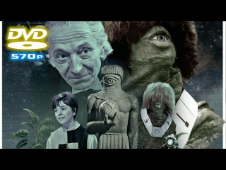
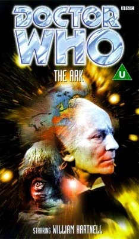
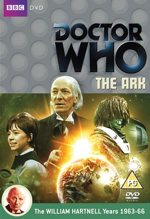
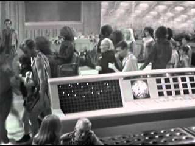

Субтитры: Русские и Английские |  |
|---|
| 1. Стальное небо 2. Эпидемия 3. Возвращение 4. Бомба | Сохранились - 16mm t/r |
|---|
|
«Ковчег» переносит Доктора, Стивена и Додо на гигантский звездолёт — последний дом человечества, летящий к новой планете. На борту зреет конфликт: моноиды, изначально помощники людей, всё сильнее берут власть в свои руки. Доктор раскрывает их план — заселить новый мир без людей — и помогает организовать сопротивление. Серия показывает, как союзники могут стать угрозой, и ставит вопрос: что важнее — выживание вида или свобода каждого. Финал подводит к непростой цене спасения: чтобы дать людям шанс, приходится рисковать всем..
 VHS - октябрь 1998 |  DVD - 14 февраля 2011 * Версия в нашей группе |
|---|


